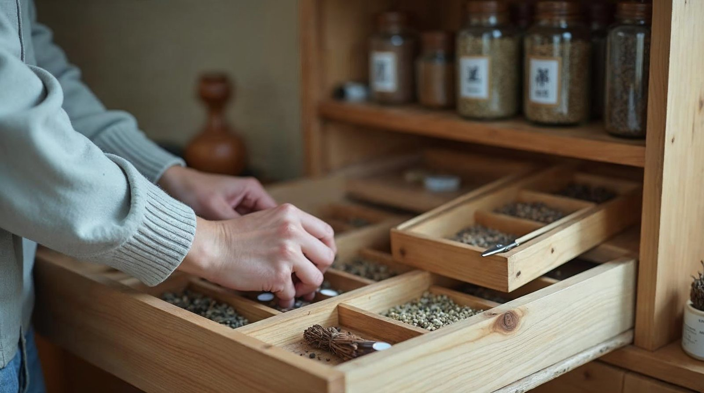
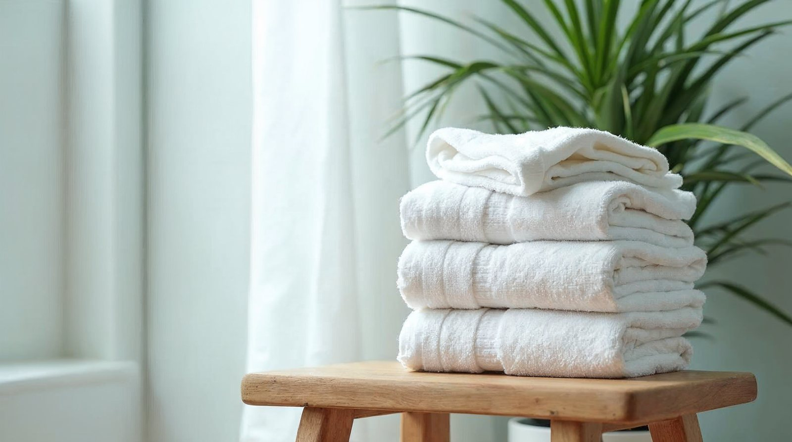
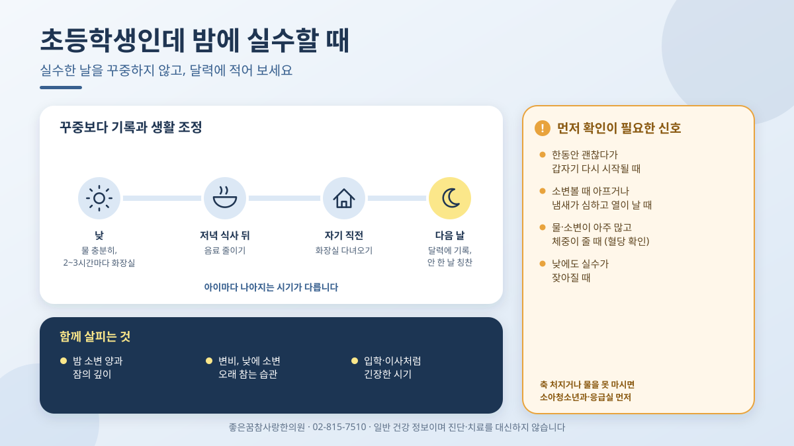

이종호 한의사 감수좋은꿈참사랑한의원 대표원장 (한의사 면허번호 19769)발행 2026-11-23 · 수정 2026-11-26
이 글의 차례
- 왜 이런 불편이 생길 수 있나요
- 컵에 물이 넘치는 것과 비슷해요
- 밤에만 실수하는 것과 낮에도 급한 것은 다른 얘기예요
- 왜 변비를 꼭 여쭤볼까요?
- 우리 아이는 어떤지 체크해 보세요
- 학교 화장실을 피하는 아이도 있어요
- 한의학에서는 몸이 찬지도 함께 봐요
- 밤에 깨워서 화장실에 데려가는 건 어떨까요?
- 잠이 아주 깊은 아이라면
- 아이 마음은 이렇게 살펴 주세요
- 저녁 시간을 이렇게 짜 보셔도 좋아요
- 주말이나 방학에는 어떤가요?
- 목표는 작게 잡아요
- 먼저 이렇게 여쭙니다
- 일상에서 먼저 해 볼 수 있는 것
- 실수한 날 아침, 이렇게 해 주세요
- 보호자분께 부탁드릴 건 딱 하나예요
- 한의원에서 함께 살필 수 있는 경우
- 처음 오시면 어떤 순서로 보나요?
- 이렇게 기록해 오시면 상담이 쉬워집니다
- 캠프나 친구 집이 걱정될 때
- 이런 증상은 먼저 확인이 필요합니다
초등학생이 되어서도 밤에 이불에 실수하는 것은 아이마다 나아지는 시기가 다르고, 밤에 만들어지는 소변 양과 잠의 깊이, 소변 습관, 변비가 함께 영향을 주는 경우가 많아 꾸중보다 기록과 생활 조정이 먼저입니다. 캠프나 친구 집에서 자는 것을 피하게 되면 아이도 부모님도 속상한 마음이 큽니다.
진료실에서 보호자분들이 목소리를 낮춰 이렇게 말씀하실 때가 있어요. "원장님, 애가 아직도 밤에 실수를 해요. 제가 뭘 잘못한 걸까요?" 그 마음이 얼마나 무거운지 알아요. 그런데 먼저 이 말씀부터 드리고 싶어요. 보호자분 탓도, 아이 탓도 아닌 경우가 대부분이에요.
밤에 소변을 가리는 건 걸음마나 이가 나는 것처럼 아이마다 때가 달라요. 같은 반 친구들이 다 가린다고 우리 아이가 늦은 게 이상한 건 아니거든요. 원래 그래요. 몸의 리듬이 자리 잡는 속도가 조금 다를 뿐인 경우가 많아요.
왜 이런 불편이 생길 수 있나요
- 밤에 소변 양을 줄여 주는 몸의 리듬이 아직 자리 잡지 않은 아이가 있습니다.
- 잠이 아주 깊어 방광이 차도 깨지 못하는 경우가 있습니다.
- 변비가 있으면 장이 방광을 눌러 실수가 늘기도 합니다.
- 저녁 늦게 마시는 음료와 낮에 소변을 오래 참는 습관도 영향을 줍니다.
- 입학, 이사, 동생이 태어난 때처럼 마음이 긴장한 시기에 잠시 늘어나는 아이도 있습니다.
컵에 물이 넘치는 것과 비슷해요
저는 보호자분들께 컵 이야기를 자주 해요. 방광을 컵이라고 생각해 보세요. 밤새 물을 붓는 속도, 컵의 크기, 그리고 컵이 찼을 때 울리는 알람, 이 세 가지가 맞아야 이불이 마르거든요.
물을 붓는 속도는 밤에 만들어지는 소변 양이에요. 보통은 자라면서 밤에는 소변을 덜 만들게 되는데, 그 리듬이 늦게 자리 잡는 아이가 있어요. 저녁에 마신 음료가 많으면 물을 더 빨리 붓는 셈이고요.
컵의 크기는 방광이 소변을 담아 두는 양이에요. 낮에 화장실을 아주 자주 가거나, 반대로 꾹 참다가 급하게 뛰어가는 아이는 컵을 넉넉하게 쓰지 못하는 경우가 있어요.
알람은 컵이 찼을 때 잠에서 깨는 힘이에요. 잠이 아주 깊은 아이는 알람이 울려도 못 듣는 거예요. 그러니까 사실은 아이가 게으르거나 일부러 그러는 게 아니라, 이 세 가지 중 어딘가가 아직 덜 맞춰진 거예요.
밤에만 실수하는 것과 낮에도 급한 것은 다른 얘기예요
이것도 둘로 나눠서 봐요. 낮에는 아무 문제 없이 지내는데 밤에만 실수하는 아이가 있고, 낮에도 소변이 급해 바지를 잡고 뛰어가거나 속옷에 조금씩 묻히는 아이가 있어요.
밤에만 실수하는 아이는 밤 소변 양과 잠의 깊이를 중심으로 봐요. 낮에도 급한 아이는 낮 소변 습관, 물 마시는 방식, 변비를 먼저 살펴야 할 때가 많아요. 같은 야뇨라도 살필 순서가 달라지는 거예요.
왜 변비를 꼭 여쭤볼까요?
왜인 줄 아세요? 장과 방광은 아주 가까이 붙어 있거든요. 장에 변이 오래 차 있으면 옆에 있는 방광을 눌러서 컵이 작아진 것처럼 되는 거예요.
변비는 아이가 말하지 않으면 보호자분도 모르고 지나가기 쉬워요. 화장실에 오래 앉아 있는지, 변이 딱딱한지, 며칠에 한 번 보는지 아이에게 슬쩍 물어봐 주세요. 의외로 여기서 실마리가 나오는 경우가 꽤 있어요.
우리 아이는 어떤지 체크해 보세요
- 저녁 식사 뒤 물이나 음료를 한 컵 넘게 마신다
- 잠들면 흔들어 깨워도 잘 일어나지 않는다
- 변을 며칠에 한 번 보거나 딱딱하다고 한다
- 낮에 소변을 참다가 급하게 화장실로 뛰어간다
- 초콜릿 음료나 탄산음료를 저녁에 자주 마신다
- 실수한 다음 날 유난히 기운이 없거나 눈치를 본다
해당하는 항목을 적어 오시면 그 부분부터 같이 봐요. 몇 개 해당한다고 걱정하실 일이 아니라, 어디서부터 손댈지 알려 주는 지도라고 생각하시면 편해요.
학교 화장실을 피하는 아이도 있어요
의외로 많은 게 이거예요. 학교 화장실이 낯설거나 쉬는 시간이 짧아서, 혹은 친구들 눈이 신경 쓰여서 하루 종일 소변을 참는 아이가 있어요. 그러면 낮에 컵을 넉넉하게 쓰는 연습이 안 되고, 집에 와서 물을 몰아 마시게 되죠.
아이에게 "학교에서 화장실 몇 번 가?" 하고 가볍게 물어봐 주세요. 거의 안 간다고 하면 쉬는 시간 한 번은 다녀오기로 약속해 보세요. 낮 습관이 바뀌면 밤에도 영향이 가는 경우가 많거든요.
한의학에서는 몸이 찬지도 함께 봐요
한의학에서는 오래전부터 아이 야뇨를 볼 때 몸이 찬지, 쉽게 지치는지를 함께 살폈어요. 예를 들어 손발과 배가 자주 차고, 추운 계절에 실수가 늘고, 소변 색이 아주 맑고 양이 많은 아이가 있어요.
그런 아이는 배를 따뜻하게 덮어 주고, 찬 음료와 아이스크림을 저녁에는 줄여 보세요. 반대로 땀이 많고 더위를 타는 아이도 있어서, 이건 아이마다 달라요. 그래서 맥을 짚고 직접 보는 게 필요한 거예요.
밤에 깨워서 화장실에 데려가는 건 어떨까요?
보호자분들이 가장 많이 고민하시는 부분이에요. 깨워서 데려가면 그날 이불은 마를 수 있어요. 그런데 아이가 비몽사몽 끌려가기만 하면, 스스로 깨는 연습은 되지 않는 경우가 있어요.
그래서 저는 깨우실 거라면 아이가 눈을 뜨고 스스로 걸어가게 해 달라고 말씀드려요. 그리고 보호자분 잠이 너무 부족해지면 오래 못 가니까, 무리하지 않는 선에서 기록을 보고 같이 정하는 게 좋아요.
잠이 아주 깊은 아이라면
흔들어도 안 깨는 아이는 대개 하루를 아주 열심히 보낸 아이예요. 늦게 자고 일찍 일어나 잠이 모자라면, 몸은 짧은 시간에 깊게 자려고 해서 알람을 더 못 듣게 돼요.
잠드는 시간을 일정하게, 조금만 앞당겨 보세요. 학원 숙제로 늦어지는 날이 많다면 숙제 시간을 저녁 식사 전으로 옮기는 방법도 있어요. 잠이 충분하면 알람을 듣는 힘도 조금씩 달라지는 경우가 많아요.
아이 마음은 이렇게 살펴 주세요
야뇨 자체보다 아이를 더 힘들게 하는 건 부끄러움이에요. 형제나 친구와 비교하는 말, 다른 가족 앞에서 실수 이야기를 꺼내는 일은 피해 주세요. 아이는 생각보다 다 듣고 기억하거든요.
아이에게는 "네 몸이 아직 밤에 쉬를 줄이는 연습 중이야. 키가 자라는 것처럼 때가 되면 따라와" 하고 설명해 주시면 좋아요. 아이 잘못이 아니라는 걸 알면 표정부터 달라져요.
저녁 시간을 이렇게 짜 보셔도 좋아요
예를 들어 저녁을 8시에 먹고 9시에 음료를 마신 뒤 10시 넘어 바로 잠드는 경우라면, 순서를 조금만 바꿔 보세요. 저녁을 30분 당기고, 식사 뒤 음료는 한두 모금으로 줄이고, 씻은 뒤 화장실에 한 번 다녀오는 거예요.
자기 직전에 한 번 더, 그러니까 씻고 나서 한 번, 불 끄기 바로 전에 또 한 번 다녀오게 하는 방법도 있어요. 처음 다녀오고 몇 분 뒤에 다시 가면 방광에 남아 있던 소변이 조금 더 나오는 아이가 있거든요.
주말이나 방학에는 어떤가요?
학기 중과 방학, 평일과 주말의 실수 횟수가 다르다면 그것도 중요한 단서예요. 예를 들어 방학에 늦게 자고 늦게 일어나면서 실수가 늘었다면 잠의 리듬을, 학기 중에 늘었다면 학교 소변 습관이나 긴장을 먼저 살펴봐요.
가족 중에 어릴 때 비슷한 경험이 있었다면 그것도 알려 주세요. 보호자분 자신이 언제쯤 가렸는지 기억나시면 참고가 되고, 아이에게 "엄마 아빠도 그랬어"라는 말이 큰 위로가 되기도 하거든요.
목표는 작게 잡아요
처음부터 "이제 한 번도 실수하지 말자"는 목표는 아이에게도 보호자분에게도 너무 무거워요. 일주일에 다섯 번이던 실수가 네 번이 되면, 그걸 먼저 같이 기뻐해 주세요.
저는 늘 최대한 천천히 가자고 말씀드려요. 크게 한 번에 바꾸려고 하면 아이가 낙담하기 쉽거든요. 마른 날이 하루씩 늘어나는 걸 함께 세다 보면, 아이도 자기 몸을 믿는 마음이 조금씩 생겨요.
먼저 이렇게 여쭙니다
- 일주일에 몇 번 정도 실수하나요?
- 저녁 식사 뒤 물이나 음료를 얼마나 마시나요?
- 낮에도 소변을 급하게 참지 못하는 경우가 있나요?
- 변비가 있거나 변을 보기 힘들어하나요?
- 밤에 깨우면 잘 일어나나요?
일상에서 먼저 해 볼 수 있는 것
- 저녁 식사 뒤 음료를 줄이고 낮에 물을 충분히 마시기
- 자기 직전 화장실 다녀오기를 습관으로 만들기
- 실수한 날 꾸중하지 않고 실수하지 않은 날 칭찬하기
- 실수한 날과 마신 양을 달력에 기록하기
- 낮에 2~3시간마다 화장실에 가는 습관 들이기
물을 줄이라는 게 하루 전체를 줄이라는 뜻은 아니에요. 아침과 점심에 충분히 마시고, 저녁부터 조금씩 덜어 내는 거예요. 낮에 거의 안 마시다가 학원에서 돌아와 몰아서 마시는 아이라면, 그 물을 낮으로 옮겨 주는 것만으로도 밤이 달라지는 경우가 있어요.
초콜릿 음료, 콜라, 녹차 아이스티처럼 카페인이 든 음료는 소변을 더 만들게 할 수 있어요. 저녁에는 물이나 보리차처럼 순한 것으로 바꿔 주세요.
실수한 날 아침, 이렇게 해 주세요
아이가 젖은 이불을 숨기거나 거짓말을 할 때가 있어요. 혼날까 봐 그런 거예요. 그 마음을 먼저 알아주시고, "괜찮아, 같이 치우자" 한마디면 충분해요.
젖은 옷을 빨래통에 넣는 일 정도는 아이가 하게 해도 좋아요. 벌이 아니라 "내 몸은 내가 챙긴다"는 연습이에요. 다만 화난 목소리로 시키면 벌이 되니까, 담담하게 해 주세요.
침대에는 방수 패드를 깔아 두면 보호자분 손도 덜 가고 아이도 덜 미안해해요. 밤에 갈아입을 옷과 수건을 머리맡에 두면 아이가 스스로 갈아입고 다시 잘 수 있어요.
보호자분께 부탁드릴 건 딱 하나예요
위에 여러 가지를 적었지만, 다 하시려면 지쳐요. 그래서 저는 하나만 부탁드려요. 마른 날 아침에 달력에 스티커 하나 붙여 주세요. 실수한 날은 아무것도 안 붙이고 그냥 지나가시면 돼요.
이것만 지켜 주시고 딴 건 편하게 하셔도 돼요. 아이 몸을 살피는 건 제가 맡을게요. 아이가 "나 이번 주에 스티커 세 개야" 하고 스스로 세기 시작하면, 그게 생각보다 큰 힘이 되거든요.

한의원에서 함께 살필 수 있는 경우
- 야뇨가 이어지는 아이의 경우 잠의 깊이, 소변 습관, 변비를 함께 살핍니다.
- 몸이 차고 쉽게 지치는 편인지 함께 살핍니다.
- 아이가 위축되어 있는 경우 마음도 함께 살핍니다.
좋은꿈참사랑한의원에서는 아이가 부끄러워하지 않도록 아이에게도 직접 여쭙고, 보호자와 함께 천천히 이야기를 나누며 진행합니다. 모든 아이의 맥을 먼저 짚고, 필요하다고 판단될 때 복진 같은 방법을 더해 아이의 몸 상태를 살핀 뒤, 아이의 나이와 상태에 맞는 방법을 보호자와 함께 정합니다.
처음 오시면 어떤 순서로 보나요?
처음 오시면 저는 아이 맥부터 짚어요. 모든 분께 그렇게 하거든요. 보호자분과 함께 들어오시면 되고, 아이가 긴장해 보이면 학교 이야기 같은 걸 먼저 나누며 편해진 다음에 짚어요.
그다음 보호자분께 기록을 보면서 여쭙고, 아이에게도 직접 물어봐요. "밤에 쉬 마려운 느낌이 들 때가 있어?" 같은 거요. 아이가 말하기 싫어하면 억지로 묻지 않아요. 부끄러운 마음도 존중해야 하거든요.
그러니까 사실은 소변만 보는 게 아니에요. 잠, 식사, 변, 몸이 차고 쉽게 지치는지, 요즘 마음이 긴장할 일이 있는지까지 함께 봐요. 이불을 말리는 것보다 아이 몸 전체가 잘 돌아가게 하는 게 먼저라고 생각하거든요.
한약이 필요하다고 판단되면 그때 상담하고, 지금 먹고 있는 약이나 영양제가 있으면 먼저 확인해요. 먹는 중에 아이가 불편해 보이면 복용을 멈추고 연락 주세요. 다시 오시면 지난 기록과 비교하면서 보통 한 달 정도 지켜보고 다음을 같이 정해요.

이렇게 기록해 오시면 상담이 쉬워집니다
- 2주 정도의 실수한 날과 마른 날
- 저녁에 마신 음료의 양과 시간
- 잠든 시간과 깨우기 어려운 정도
- 변 보는 간격과 낮 소변 횟수
- 실수한 날 아이가 유난히 피곤했거나 긴장했던 일이 있었는지
어렵게 생각하지 않으셔도 돼요. 달력에 마른 날은 동그라미, 실수한 날은 세모, 그 옆에 저녁 음료 한 줄이면 충분해요. 2주만 모아도 어떤 날 실수가 많은지 눈에 보이기 시작해요.
예를 들어 학원에서 늦게 와서 저녁을 늦게 먹은 날, 체육 시간이 있어 많이 뛴 날, 주말에 늦게 잔 날에 세모가 몰려 있다면 그게 바로 손댈 곳이에요.
캠프나 친구 집이 걱정될 때
아이가 캠프 가기 싫다고 하면 속상하시죠. 미리 몇 주 전부터 저녁 음료 줄이기와 자기 전 화장실 다녀오기를 연습해 두면 아이도 조금 마음을 놓아요.
인솔 선생님께 조용히 미리 말씀드려 두는 것도 방법이에요. 아이가 친구들 앞에서 곤란하지 않게 배려해 주실 수 있거든요. 아이와 의논해서, 아이가 괜찮다고 할 때만 해 주세요.
수학여행처럼 날짜가 정해진 일정이 있다면 처음 오실 때 미리 알려 주세요. 남은 기간에 맞춰 무엇부터 할지 순서를 같이 잡을 수 있어요. 아이에게도 "그날까지 우리 이것만 같이 해 보자" 하고 작은 목표를 정해 주시면 좋아요.
궁금한 건 편하게 물어보세요. 오시면 아이 마음부터 같이 살피면서 천천히 이야기 나눠요.
보호자분이 지치지 않는 것도 아주 중요해요. 밤마다 이불을 빨고 새벽에 깨는 일이 이어지면 누구라도 힘들거든요. 힘드신 부분도 그냥 말씀해 주세요. 그것까지 같이 들어야 오래갈 수 있는 방법이 나와요.
이런 증상은 먼저 확인이 필요합니다
- 한동안 괜찮다가 갑자기 다시 시작된 경우
- 소변볼 때 아파하거나, 냄새가 심하거나, 열이 함께 나는 경우
이런 신호가 있으면 한의원보다 가까운 병원이나 응급실을 먼저 찾으세요.

여쭙는 것
- 일주일에 몇 번 정도 실수하나요?
- 저녁 식사 뒤 물이나 음료를 얼마나 마시나요?
- 낮에도 소변을 급하게 참지 못하는 경우가 있나요?
생활에서 해 볼 것
- 저녁 식사 뒤 음료를 줄이고 낮에 물을 충분히 마시기
- 자기 직전 화장실 다녀오기를 습관으로 만들기
- 실수한 날 꾸중하지 않고 실수하지 않은 날 칭찬하기
한의원에서 함께 살필 것
- 야뇨가 이어지는 아이의 경우 잠의 깊이, 소변 습관, 변비를 함께 살핍니다.
- 몸이 차고 쉽게 지치는 편인지 함께 살핍니다.
- 아이가 위축되어 있는 경우 마음도 함께 살핍니다.
먼저 확인이 필요한 신호
- 한동안 괜찮다가 갑자기 다시 시작된 경우
- 소변볼 때 아파하거나, 냄새가 심하거나, 열이 함께 나는 경우
한눈에 보는 표
| 구분 | 핵심 |
|---|---|
| 여쭙는 것 | 일주일에 몇 번 정도 실수하나요? 저녁 식사 뒤 물이나 음료를 얼마나 마시나요? |
| 생활에서 해 볼 것 | 저녁 식사 뒤 음료를 줄이고 낮에 물을 충분히 마시기 자기 직전 화장실 다녀오기를 습관으로 만들기 |
| 한의원에서 함께 살필 것 | 야뇨가 이어지는 아이의 경우 잠의 깊이, 소변 습관, 변비를 함께 살핍니다. 몸이 차고 쉽게 지치는 편인지 함께 살핍니다. |
| 먼저 확인이 필요한 신호 | 한동안 괜찮다가 갑자기 다시 시작된 경우 소변볼 때 아파하거나, 냄새가 심하거나, 열이 함께 나는 경우 |
자주 묻는 질문
크면 저절로 나아지나요?
나이가 들며 나아지는 아이가 많지만, 아이가 힘들어하면 미리 살펴보는 것이 좋습니다.
밤에 깨워서 화장실에 데려가야 하나요?
아이마다 다릅니다. 기록을 보고 함께 방법을 정합니다.
형제나 부모도 그랬는데 관련이 있나요?
가족 중에 비슷한 경험이 있는 경우가 있어 함께 알려 주시면 참고합니다.
캠프나 수학여행이 걱정돼요.
저녁 음료 조절과 자기 전 화장실 다녀오기를 미리 연습하고, 야간용 속옷처럼 아이가 마음 놓을 수 있는 방법을 함께 정하세요.
기저귀나 야간용 속옷을 계속 입혀도 될까요?
아이가 편하게 잠들 수 있다면 써도 괜찮아요. 아이 자존심이 상하지 않게, 아이와 의논해서 정해 주세요.
좋은꿈참사랑한의원은 재진 때 지난번 이야기부터 이어서 여쭙니다. 진료시간과 예약은 오시는 길에서 확인하세요.
어디서 상담받을 수 있나요?
좋은꿈참사랑한의원은 서울 동작구 만양로2길 2 신성빌딩 3층·5층(서울 동작구 상도동, 7호선 상도역 3번 출구 근처)에 있습니다. 한의사 3명(이종호 대표원장, 조영기 수석진료원장, 정원영 진료원장)이 진료합니다. 진료시간은 평일 09:30~20:00(점심 13:00~14:00), 토·일·공휴일 09:30~15:00이며, 방문 전 전화로 확인을 권합니다. 예약은 네이버 예약, 카카오톡 상담, 전화 02-815-7510로 받습니다.
이 글은 일반적인 건강 정보이며 개인의 진단이나 치료를 대신하지 않습니다. 증상이 있거나 복용 중인 약이 있다면 진료를 통해 확인하세요. 치료 효과는 개인마다 다를 수 있습니다.
작성 기준: 일반적으로 알려져 있는 건강 정보를 참고해 정리했습니다(대표원장 감수). 증상 기록은 1~2주 동안 하루 1회, 비슷한 시간에 적어 오시면 지난 상태와 비교하기 쉽습니다.